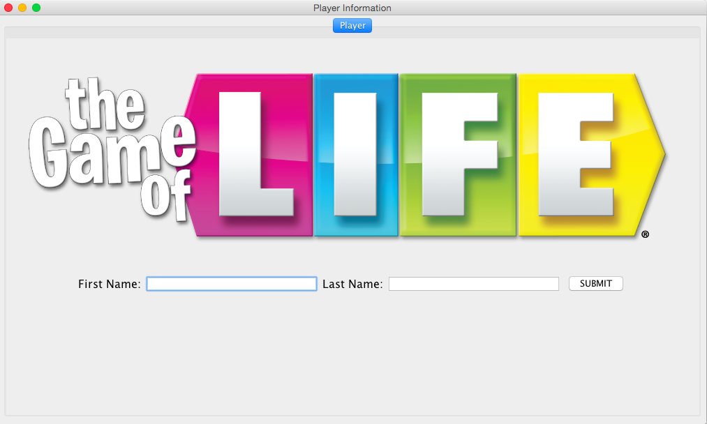

The images shown are some examples of what the gui might look like.

The main concept being that we would like to have a grid board to simulate the actual board that the game is played on.
It would also have places for player information and general status of the players.
.jpg) It would look something like this(Did this for lack of a better tool for the job). The basic premise of what we are going for
is on the image shown here.
It would look something like this(Did this for lack of a better tool for the job). The basic premise of what we are going for
is on the image shown here.